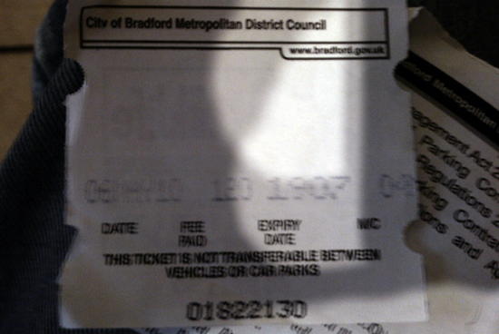

{kind=link}
{kind=link}
{kind=link}
{kind=link}

UPDATE: I won my case. Thanks to PePiPoo.

You are probably thinking, what pickle? Well it’s all a pickle created by the council, specifically Bradford Council Parking Services. This is all very petty but it shows just how the petty things in life when mismanaged can have serious consequences. Anyway, they are basically trying to bully me into a fine that I shouldn’t have to pay.
2007 - Jan - I received a £25 fine for not properly displaying ticket.
2007 - Feb - I showed proof of ticket and fine was cancelled.
2010 - May - I received a £25 fine for not properly displaying ticket. (Even though I personally showed the attendant the ticket)
2010 - May - I told them it was in error and showed proof of ticket.
2010 - May - Bradford Council Parking Services decided to still fine me
2010 - June - I appealed fine and informed council all documents would be released under Apache GPL2 license (for funsies and so they know to protect peoples identities should they choose to)
2010 - June - Appeal was rejected. <– wtf even with proof that I had paid and displayed!
2010 - June - Fine was increased to £75
2010 - July - I tried to re-appeal but was told there is no way to appeal
2010 - July - Bradford Council Parking Services threatened me with “registering debt at court” and bailiffs.
2010 - July - I threatened Bradford Council Parking Services with equally “registering debt at court”.
2010 - September - I appealed as I never received an NTO
2010 - September - I received a new NTO, I now need to through another appeal procedure.
I received 2 parking fines in error. I proved they were both in error and now I am threatened with debt being registered at court.
Worth noting the company I own is awaiting about £50k of unpaid PO’s from Bradford Council which have been overdue by over a year, should I register them at court too?
The proof I paid and displayed (Note this tickets start time is BEFORE the time/date of the fine so that isn’t an issue)
My Appeal being rejected (3 parts)
Correspondence after the appeal was rejected and to date. <– includes the threats by the council